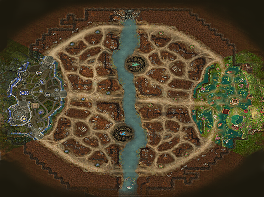

小兵、波次与超级兵
3近战＋2远程、攻城位、拆营后强化

玩家先读：这条规则解决什么问题？
3近战＋2远程、攻城位、拆营后强化
经典地图第 n 波的理想出兵时间
T(n) ≈ 60 + 30(n − 1) 秒
中文公式
第几波出兵时刻 ≈ 60 + 30 ×（波次序号 − 1）秒
| 符号 | 中文含义 |
|---|---|
n | 波次，从 1 开始 |
T | 从对局开始累计秒数 |
- 第 4 波约在 2:30；第 44 波约在 22:30。
理想时钟公式不覆盖游戏 tick、刷兵条件。
| 单位位 | 每波数量 | 何时出现 |
|---|---|---|
| 近战或拆营后的强化近战 | 3 | 每波互斥替换，不额外加 3 |
| 远程兵 | 2 | 每波 |
| 攻城位 1 | 1 | 第 4、8、12… 波 |
| 攻城位 2 | 1 | 第 44、48、52… 波 |
实际原版条件、数值与边界
兵线：波次、攻城单位与拆营后的变化
地图设定战斗起始延迟 60 秒；通用兵线间隔 30 秒。标准阵营刷兵器每波安排 3 个近战位和 2 个远程位。近战资源在敌方该路兵营被毁前后切换，另有按波次加入的攻城单位。来源：Data/Maps/Multiplayer/MOBA/_.ADMPSTTN.xdb、Data/GameLogic/AILogic.AILP.xdb、Data/Maps/Multiplayer/MOBA/Spawners/A.CSPN.xdb、Src/PF_GameLogic/PFCommonCreep.cpp、Src/PF_GameLogic/PFBaseSpawner.cpp。
| 兵种位置 | 每次满足条件的数量 | 出现规则 |
|---|---|---|
| 普通近战 | 3 | 敌方该路兵营尚未拆除时，每波出现 |
| 替代近战 | 3 | 敌方该路兵营已拆除时，替代前一类；不是额外再加 3 个 |
| 远程 | 2 | 拆营前后均按每波安排 |
| 第一攻城位 | 1 | 从第 4 次出兵起，每 4 波出现一次 |
| 第二攻城位 | 1 | 从第 44 次出兵起，每 4 波出现一次，与第一攻城位可同时出现 |
计时器中的起始值 3、43 是从零起算的波次条件，不是“第 3 秒、43 秒”。按首波 60 秒、之后每 30 秒的理想调度，第一攻城位首次在约 2:30，第二攻城位首次在约 22:30；引擎步进和刷兵上限等条件仍会影响实际触发，不能把推算时刻当录像实测。来源：Data/Maps/Multiplayer/MOBA/Spawners/TimerMelee2.CSTM.xdb、Data/Maps/Multiplayer/MOBA/Spawners/TimerMelee1.CSTM.xdb、Data/Maps/Multiplayer/MOBA/Spawners/TimerRanged2.CSTM.xdb、Data/Maps/Multiplayer/MOBA/Spawners/TimerSiege1.CSTM.xdb、Data/Maps/Multiplayer/MOBA/Spawners/TimerSiege2.CSTM.xdb。
策划含义是：兵线不是静态背景。固定波次给推进窗口提供节拍；拆兵营会改变后续压力；后期额外攻城单位则提高阵地被持续压迫时的负担。英雄离线追击时，兵线仍在走，错失的可能是拆塔机会，也可能是自家基地的防守时间。
普通兵线第几波开始升级？
经典边境之地六个兵线刷兵器都从 1 级起步。第一波约在开局 60 秒生成，之后每 30 秒出一波。等级另走一条计时，从开局延迟结束再等 45 秒，约在 1:45首次升到 2 级。之后每过 45 秒再升一级。出兵次数本身不触发升级。
新小兵出生时读取刷兵器当时的等级。经典兵线的 lifetimeLevelUp 为 false，已出门的小兵不会跟着刷兵器升。如果某个模拟步同时满足出兵和定时升级条件，先生成小兵，再提高刷兵器等级，该波沿用旧等级。
按波次算出生等级
if (CanSpawnWave()) { SpawnWave(); }
StepCreepsTimeLevel(dtInSeconds);
pCreep->SetPower(GetCreepsLevel(), statFactors);第三行是创建小兵时在刷兵分支内执行的等级读取。
中文公式
波次出生时刻 ≈ 60 + 30 ×（波次序号 − 1）秒。出生等级 = 取较小值（30，1 + 出生所在模拟步之前已经完成的定时升级次数）。
用理想时间线代入，已完成升级次数 = 取较大值（0，向上取整〔30 ×（波次序号 − 1）÷ 45〕− 1）。向上取整后减 1，是为了排除正好与刷兵同一步发生的升级。
算例 第 4 波约在 150 秒出兵，距第一波 90 秒。向上取整（90 ÷ 45）− 1 = 1，所以同一步先出 2 级兵，刷兵器随后升到 3 级。第 5 波约在 180 秒出兵，已完成升级 2 次，因此出 3 级兵。第 4 波如果被延到第二次升级已经完成之后，出生就是 3 级。
展开波次公式与源码依据
原版每个模拟步先检查刷兵，再递减升级计时器，升级条件为计时器小于 0。经典普通兵线的每波升级开关关闭，定时每次升 1 级，上限 30。公式按开场延迟结束后立即出第一波、稳定间隔、未暂停升级的理想时间线推导；实际以刷兵调用时已经完成的升级为准。
先刷兵后升级的调用顺序 · 升级计时与上限判断 · 新兵读取刷兵器等级 · 等级上限与全局时间参数 · 首波偏移与成长开关
算例：从第一波到第一次重合
| 理想时刻 | 刷兵器发生什么 | 新兵等级 |
|---|---|---|
| 1:00、1:30 | 第 1、2 波 | 均为 1 级 |
| 1:45 | 刷兵器升到 2 级，已出门的小兵仍是 1 级 | 这时没有新波次 |
| 2:00 | 第 3 波，第一波 2 级兵 | 2 级 |
| 2:30 | 第 4 波与第二次升级在理想时钟上重合。假设实际在同一步触发，先刷兵，再升到 3 级 | 2 级 |
| 3:00 | 第 5 波 | 3 级 |
时间线假设刷兵未被延迟、升级未暂停，且三路兵营尚未全拆。计时器按模拟步递减，出兵还受单位数量等条件约束。若第 4 波被推迟到升级之后才生成，就会刷 3 级兵。实际等级以该波创建时刷兵器已经完成的升级为准。
原版配置与结算源码
经典地图开局延迟 · 中路出兵与成长配置 · 全局 45 秒升级与 30 秒波次 · 兵线计时起点 · 刷兵器等级初始化 · 先刷兵再升级 · 继承成长参数与出生后成长开关 · 新兵读取等级 · 小兵自身升级检查
拆掉兵营后，哪一波开始换兵？
已经刷出的小兵保留原来的编成、等级和属性。敌方兵营倒下时，系统切换的是我方同一路刷兵器。第一波在摧毁事件之后实际刷出的兵就使用新编成，无需多等一波。若出兵与拆营落在同一个游戏步进，先执行出兵就沿用旧编成，先处理摧毁就用新编成。出兵计时与波次计数照常推进。
拆一路时，该路每波的 3 个 Melee2 近战位换成 3 个 Melee1 近战位，后续出生的小兵还使用拆营属性倍率。2 个远程位和攻城位的排程照旧。第三座敌方兵营倒下时，三路刷兵器都进入 powerMega。此后每路仍刷 3 个 Melee1＋2 个远程，达到原波次条件才加攻城兵。变化在于三路刷兵器的等级设为 30，新刷出的兵按该等级初始化，并沿用该路拆营后的属性倍率。
算例：先拆中路，再拆掉最后一路
| 时间与事件 | 我方刷兵结果 |
|---|---|
| 约 2:30，第 4 波已出门 | 此时三路敌方兵营都在。每路刷 3 个 Melee2＋2 个远程＋1 个攻城兵。 |
| 第 4 波刷完后、第 5 波前拆掉敌方中路兵营 | 已经出门的第 4 波保持原样。约 3:00 的第 5 波，中路刷 3 个 Melee1＋2 个远程，上下路仍各刷 3 个 Melee2＋2 个远程。这一波没有攻城兵。 |
| 约 4:30 的第 8 波前，敌方三座兵营全部被拆 | 第 8 波三路各刷 3 个 Melee1＋2 个远程＋1 个攻城兵，每路 6 个、三路合计 18 个 30 级小兵。第 44 波起遇到两个攻城位同时满足时，每路 7 个。 |
时间按首波 60 秒、每 30 秒一波推算。实战若延迟刷兵，以实际创建小兵的先后顺序为准。